El login tiene dos cajas de texto que sirven para ingresar un usuario valido y una contraseña que corresponda al usuario, si un usuario y contraseña son valido se pasara al menu principal pero si estos son incorrectos entonces emergera un mensaje que avisara al usuario que no esta ingresando los datos correctos.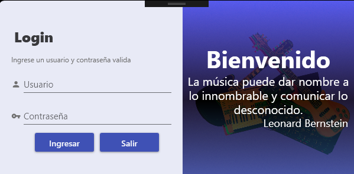
En el menu principal cuenta con el logo en su centro, con una barras en la parte izquierda de la pantalla donde se despliegan todas las opciones del menu y en la esquina superior derecha se encuntra un pequeño sub menu.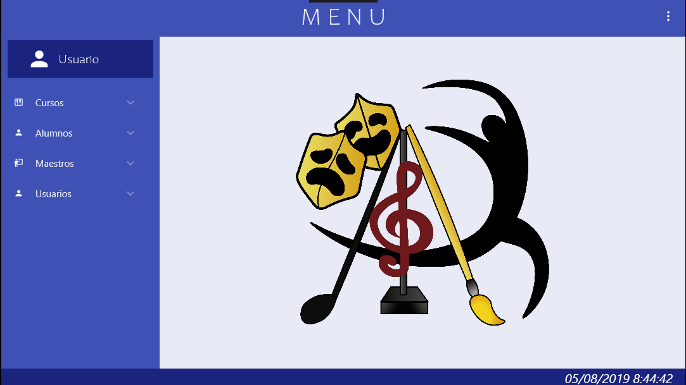
Pequeño sub menu ubicado en la esquina superior derecha nos despliega opciones de ayuda que nos mandara a los manuales del sistema, salir sesion o cerrar el programa.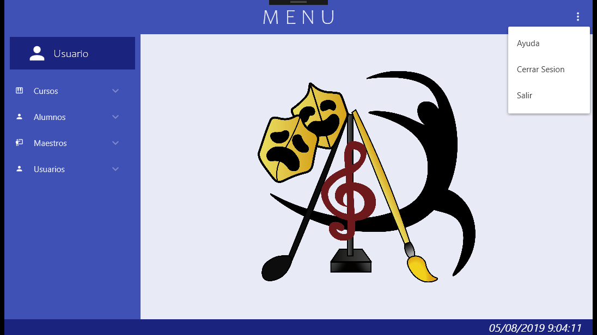
Pestaña desplegable de cursos nos permite ver las opciones disponibles para un curso como instrumentos, secciones, solfeo y estados.
Pantalla que permite gestionar a partir de sus botones y datos Los instrumentos.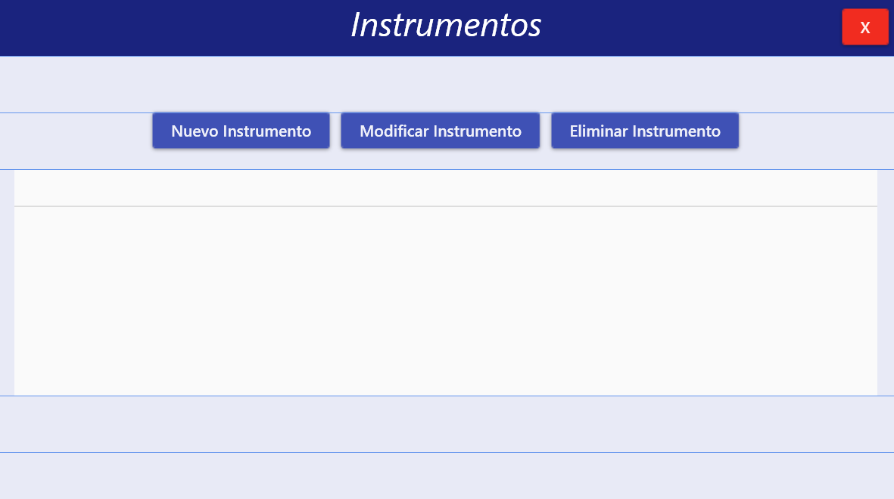
Pantalla que permite gestionar a partir de sus botones y datos la seccion.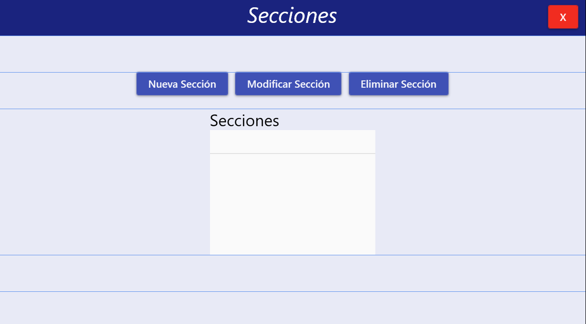
Pantalla que permite gestionar a partir de sus botones y datos del solfeo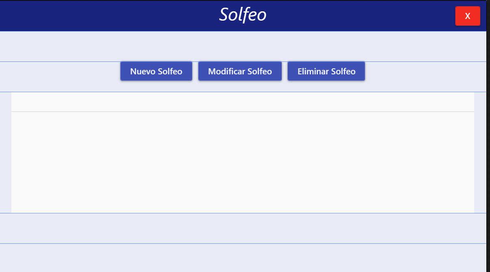
Pestaña desplegable de alumnos nos permite ver las opciones disponibles para los alumnos como detalle de alumno, secciones, solfeo, sus padres y los pagos de esos.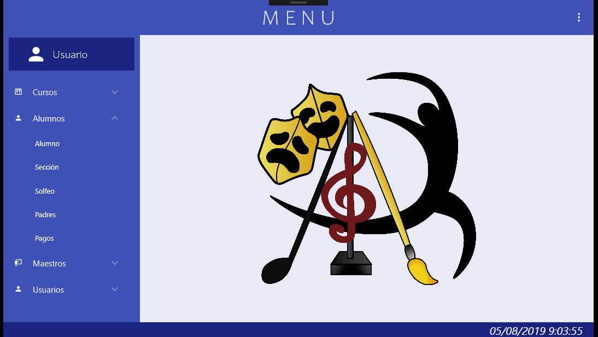
Pantalla que permite gestionar a partir de sus botones y datos del alumno.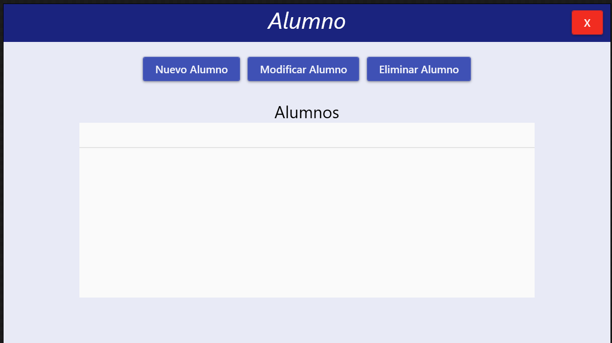
Pantalla que permite gestionar a partir de sus botones y datos de las secciones.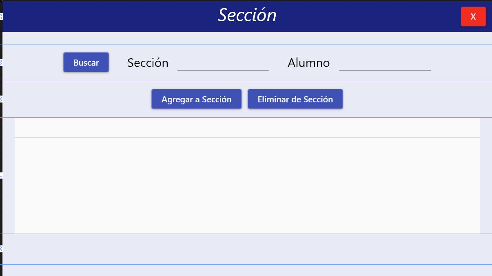
Pantalla que permite gestionar a partir de sus botones y datos del solfeo.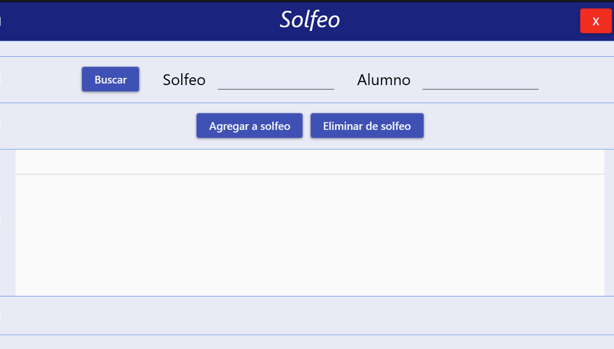
Pantalla que permite gestionar a partir de sus botones y datos de los padres.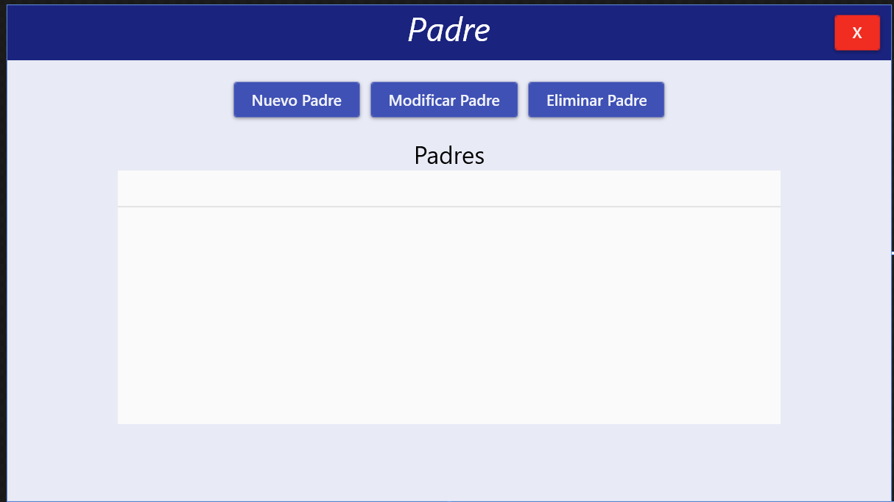
Pantalla que permite gestionar a partir de sus botones y datos de los pagos.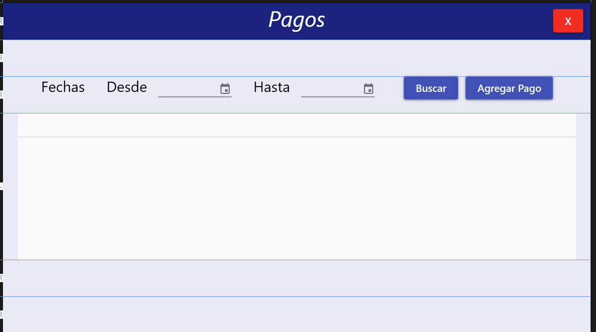
Pestaña desplegable de maestros nos permite ver las opciones disponibles para los maestros como detalle del maestro, secciones, solfeo y pagos.
Pantalla que permite gestionar a partir de sus botones y datos de los maestros.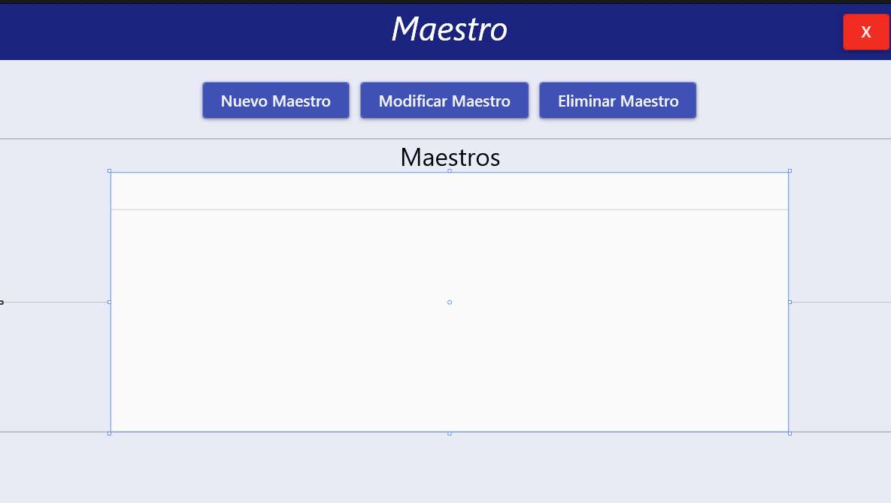
Pantalla que permite gestionar a partir de sus botones y datos de las seccion del maestro.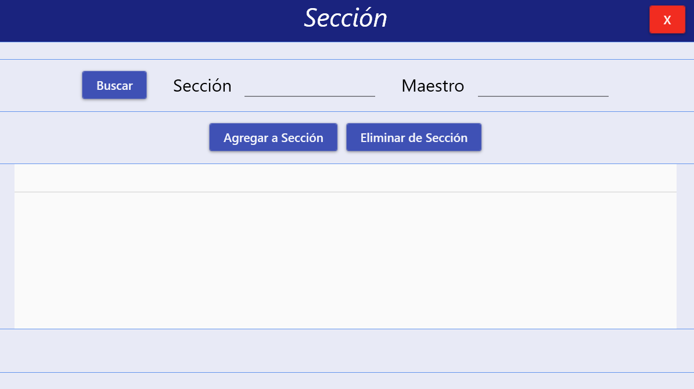
Pantalla que permite gestionar a partir de sus botones y datos del solfeo del maestro.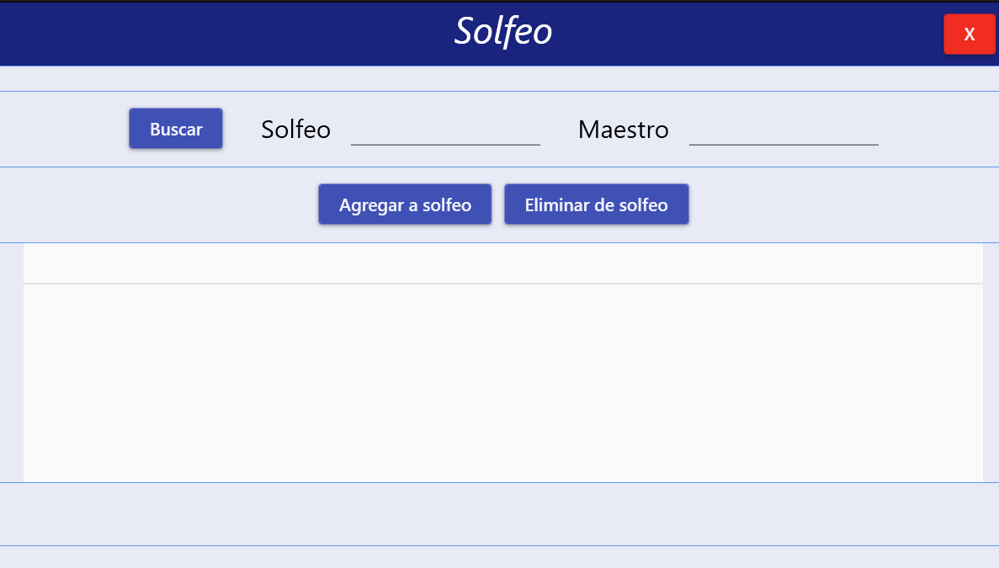
Pantalla que permite gestionar a partir de sus botones y datos de los pagos del maestro.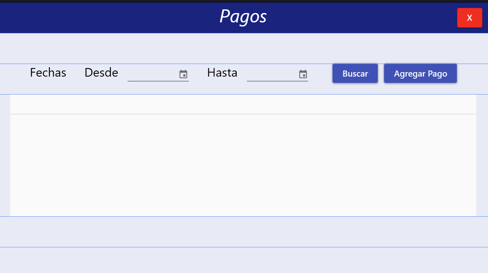
Pestaña desplegable de usuarios nos permite ver las opciones disponibles para los usuarios y todos los detalles que este puede contener.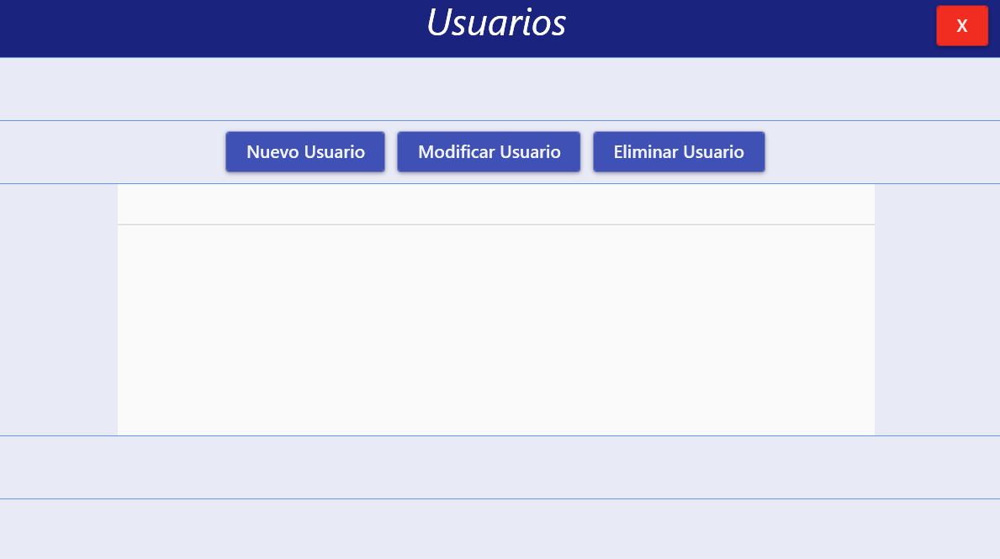
Pantalla que permite gestionar a partir de sus botones y datos de los usuarios.